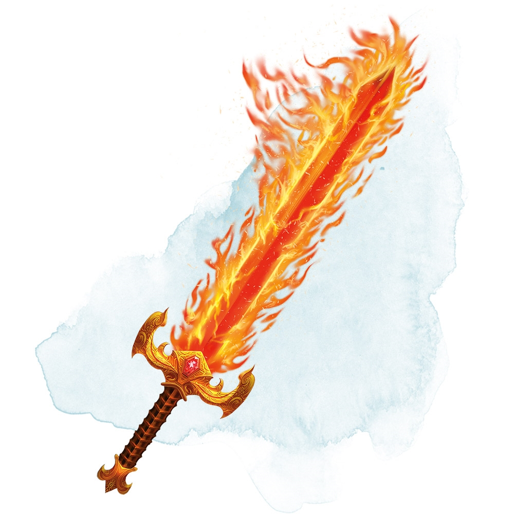

Now this thing just looks awesome as the nine hells right? Can't decide between a gun and a sword? Don't worry you don't have too, Mr J. Smith has made sure of that with this, his pride and joy: the gunblade(Not to
confused with the bladegun). Sure it sacrifices a bit of blasting power to make sure it swings, and it gives up some swinging power to make sure it shoots, but Illmater be damned if it isn't effective. For those a bit more skilled among you
that swing fast enough to attack twice per turn you could even fire once and swing for the second or vice versa.
Now this specific version is the model 858 from Mr J. Smiths own collectiors series, so its a premium weapon, able to envelope
both blade and bullet in emerald flames meaning that not only does it deal the normal 1d8 per swing and 1d10 per bullet but an additional 2d6 fire damage per attack. According to Mr Smith this is legally distinct from the Zonk blade of legend
refered to in most tales as Ilds Howl, since that fire was normal colored. This was apparently important enough to include that Mr Smith sent a private letter to the editioral team and who am I to argue with greatness huh?
The blade is
light enough to hold in one hand but you'd have to be specifically trained if you wanted to dual wield these. If you grabbed with both hands you'd probably be able to swing for 1d10 of damage so thats generally what we recommend. The range
on the gun part its range is about on par with a revolver or handgun, say 60/300ft. With the recent push for these babies on the market Smith and Westwood associated gunshops and smithies are willing to part with one for the low price of
2000g or equivalent bc which is a downright steal for something this versatile and powerful.
Of course I know a lot of you might not be able to cough that up even if its absolutely worth it. So if you're looking for the baseline version ask
your local shop for a Bladegun Mk2 or Gunblade-PA depend on if you want the bladegun or the gunblade, any older versions of half-HALF weapons are pretty rare these days. That should run you about 45g or bc equivalent if you want a new one. Note that the dice remains the same, 1d8-1d10 for the swing and
1d10 for the bullet but no green flames so no extra d6. Otherwise they are pretty much the same. Worth noting is of course the quick-blast release, which can prepared in about 30min, allowing to fire the gun part of the weapon right after
a swing for the low cost of a bonus action. Sure you'll only be able to hit what you just swung at but sometimes you need that small extra push to topple those big beasts right? A short rest should be enough to recover the usage of
the quick-blast release. For those interested you might also want to look in to our other models inclouding the Blunderblade and the Rapier Repeater.
''I fired it once and it killed my enemy, my horse, and my left ear. 10/10 would buy again'' - Sir Darrin, former knight
''It's like carrying two weapons at once, except they're both broken'' - Discredited Anonymous Adventurer

Picutred to the right is Ild's Howl, the weapon of legend that is clearly cloaked in red and orange and not green and doesn't even have a gun attatched to it
So you can't sue us zonk Estate /J. Smith